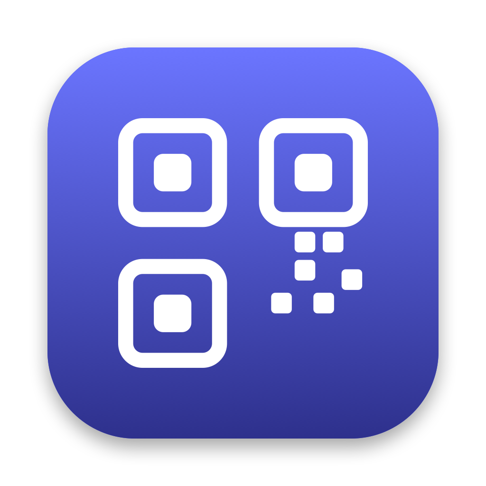
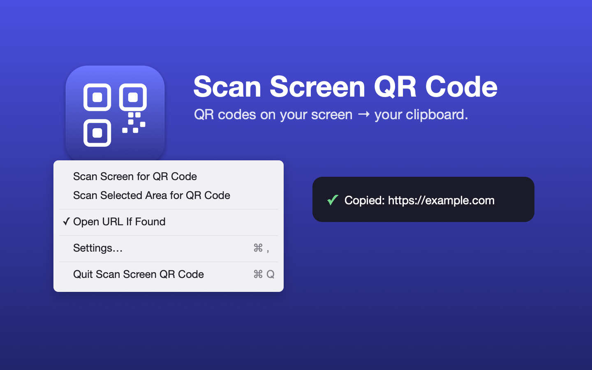

Scan Screen QR Code
Scan any QR code on your Mac's screen — straight from the menu bar or a global hotkey. No phone, no camera.
Free & open source · macOS 14 or later

Scan any QR code on your Mac's screen — straight from the menu bar or a global hotkey. No phone, no camera.
Free & open source · macOS 14 or later

Finds and decodes codes anywhere on screen, then copies the result.
Scan the entire display, or drag to select just the area you care about.
Trigger a scan from the menu bar icon or assign your own global keyboard shortcuts.
When a code is an http(s) URL, optionally open it in your browser right away.
Reads angled, small, and low-contrast codes — plus Aztec, DataMatrix, and PDF417.
Capture and detection run entirely on your Mac. Nothing is uploaded or stored.
A tiny sandboxed menu bar agent — no window clutter, no account, no analytics.
From click to clipboard in a second.
Click the menu bar icon and pick "Scan Screen for QR Code" or "Scan Selected Area" — or use your hotkey.
The app captures the screen in-process and decodes any QR, Aztec, DataMatrix, or PDF417 code with Apple's Vision framework.
The decoded text is copied and confirmed with a brief floating HUD. If it's a link, it can open automatically.
Scan Screen QR Code is built to be trustworthy with the most sensitive permission a Mac app can ask for.
Questions, bugs, or feedback — here's how to get help.
Found a bug or have a feature request? Please open a GitHub issue — or browse existing issues first.
macOS requires Screen Recording permission. On the first scan the system prompts you — grant it in System Settings ▸ Privacy & Security ▸ Screen Recording, enable Scan Screen QR Code, then try the scan again.
Make sure the code is fully visible on screen and not covered by another window. For small or tightly cropped codes, try "Scan Selected Area" and drag a box around just the code.
macOS 14 (Sonoma) or later. Scanning the selected area currently targets the main display.